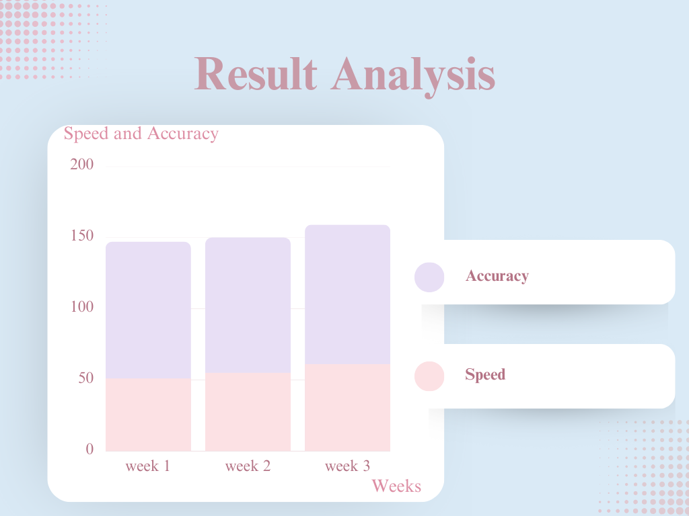

The bar chart above shows the average typing speed and accuracy of 4 members over the period of 3 weeks. The data shows that our typing speed and accuracy have improved significantly over the course of 3 weeks of touch typing practice. Besides, our typing speed increased from 51 WPM in week 1 to 61 WPM in week 3, representing an increase of 19.6%. At the same time, our typing accuracy also improved from 96% in week 1 to 98% in week 3, representing an increase of 2.1%. Thus, the data shows a clear trend of improvement in both speed and accuracy over time.
♥Benefits of Touch Typing♥
- Improved Speed and Efficiency: Touch typing allows you to type faster and more accurately, enhancing productivity in various tasks.
- Reduced Strain and Fatigue: Proper hand placement reduces the risk of repetitive strain injuries and minimizes muscle fatigue during extended typing sessions.
- Enhanced Focus and Concentration: With touch typing, you can keep your eyes on the screen, improving concentration and reducing distractions.
- Beneficial for Students: Touch typing aids in academic tasks, enabling students to complete assignments faster and with fewer errors.
- Lifelong Skill: Once learned, touch typing is a skill that stays with you, providing benefits throughout your personal and professional life.
-Conclusion-
In conclusion, we can agree that learning touch typing do infact bring many benefits for us.
So, do join us in this journey to master touch typing!!!!